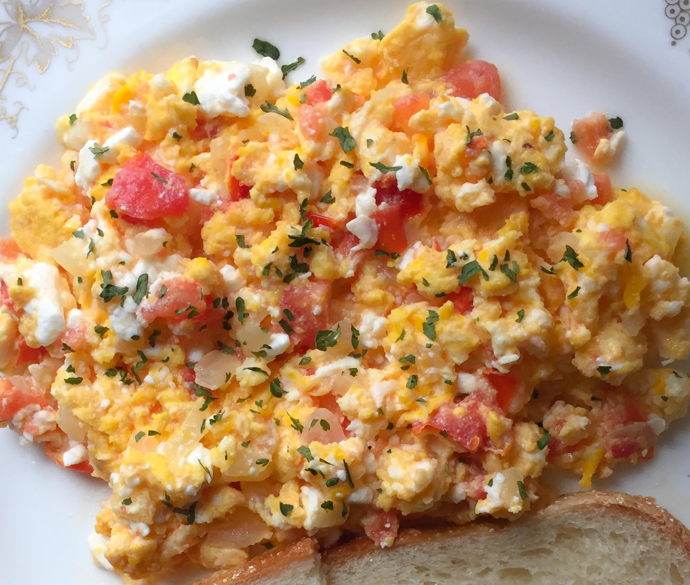

Home
Mediterranean Sandwich
Lasagna

Feta Eggs
Add some fun to your scrambled eggs
Ingredients
- 1 tablespoon butter
- ¼ cup chopped onion
- 4 eggs, beaten
- ¼ cup chopped tomatoes
- 2 tablespoons crumbled feta cheese
- salt and pepper to taste
Steps
- Melt butter in a skillet over medium heat.
- Saute onions until translucent. Pour in eggs.
- Cook, stirring occasionally to scramble.
- When eggs appear almost done, stir in chopped tomatoes and feta cheese, and season with salt and pepper.
- Cook until cheese is melted.